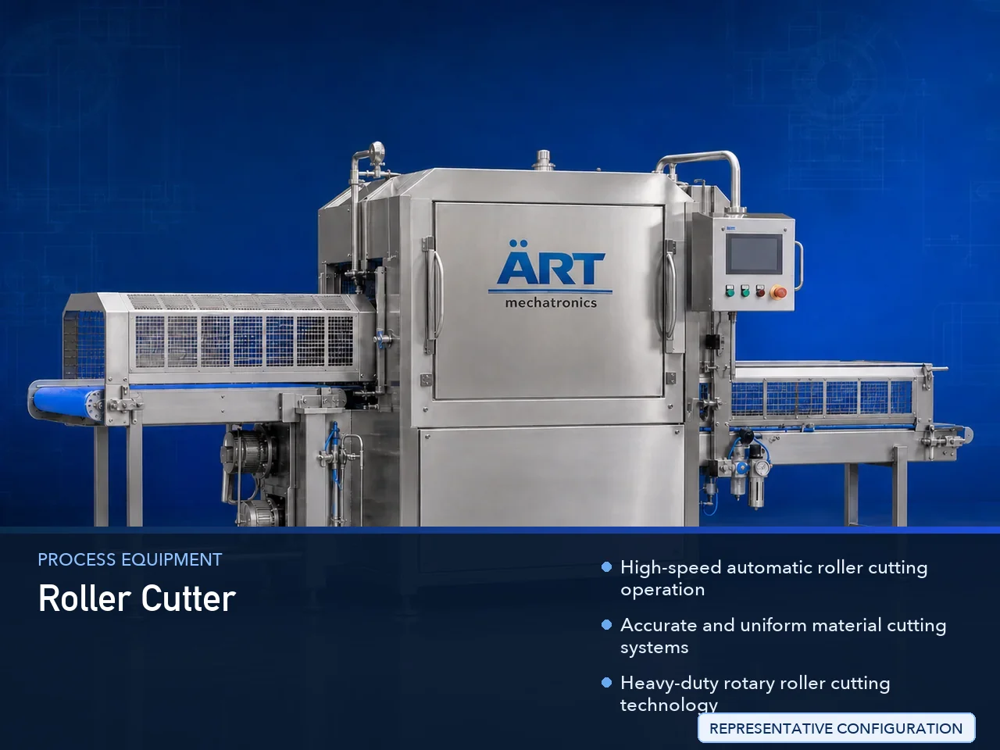

Industrial Roller Cutter Machine (Heavy Duty Roller Cutting System)
An Industrial Roller Cutter Machine, also known as a Roller Cutting Machine, Rotary Roller Cutter, Roller Slitting Machine, or Industrial Roller Cutting System, is an advanced industrial processing solution designed for continuous cutting, slitting, trimming, sheet cutting, strip cutting, web…

About the Roller Cutter
Industrial roller cutter systems are widely used for: ✔ Web and roll cutting ✔ Film and foil slitting ✔ Paper trimming operations ✔ Flexible packaging cutting ✔ Textile roll processing ✔ Rubber and plastic cutting ✔ Continuous sheet cutting ✔ Industrial converting operations
The machine improves: ✔ Cutting precision ✔ Production efficiency ✔ Material utilization ✔ Roll finishing quality ✔ Processing consistency ✔ Automation performance ✔ Industrial productivity
Industrial roller cutter machines use: ✔ Precision rotary roller cutting systems ✔ Servo synchronized drive mechanisms ✔ PLC and HMI automation controls ✔ Precision feeding and alignment systems ✔ Conveyor synchronized web handling systems
to automatically cut and process materials with superior accuracy and high production efficiency.
Industrial roller cutter machines are widely used in industries such as:
Flexible packaging industries Paper industries Plastic industries Rubber industries Textile industries Foil converting industries Printing industries Industrial converting industries
where continuous cutting, precision slitting, and high-speed material processing are essential.
The machine is highly suitable for: ✔ Flexible packaging slitting ✔ Paper and foil cutting ✔ Roll and web processing ✔ Industrial material trimming ✔ Continuous sheet cutting ✔ Automated converting operations
ART Mechatronics offers high-performance industrial roller cutter machines, engineered for continuous industrial operation, precision roller cutting performance, smooth web handling, and reliable long-term industrial processing.
Working Principle of Industrial Roller Cutter Machine
- 1. Material Feeding & Web Handling Materials are automatically transferred through synchronized feeding systems for roller cutting operation.
- 2. Material Alignment & Positioning Process Machine automatically aligns and positions web materials before cutting operation.
Servo synchronization ensures smooth material movement and accurate roller cutting operations.
- 3. Roller Cutting Operation Machine handles cutting of: ✔ Plastic films ✔ Paper rolls ✔ Aluminum foil ✔ Laminates ✔ Rubber sheets ✔ Textile rolls ✔ Flexible packaging materials ✔ Industrial web materials
accurately and continuously.
- 4. Precision Roller Cutting & Slitting Process Machine performs: Web slitting Roll trimming Strip cutting Continuous sheet cutting Edge cutting Material sizing Roll conversion
for efficient industrial material processing operations.
- 5. Intelligent Automation & Safety Integration Optional systems include: Automatic roller positioning Vision alignment systems Safety guarding systems Dust extraction systems Web tracking systems
- 6. Finished Product Discharge Processed materials discharged automatically for: Packaging operations Printing operations Further processing Warehouse storage Export shipment handling
Types of Industrial Roller Cutter Machines
- 1. Rotary Roller Cutter Machine Designed for: ✔ Continuous high-speed cutting applications
- 2. Roller Slitting Machine Suitable for: ✔ Flexible packaging and web slitting operations
- 3. Paper & Foil Roller Cutter Uses: ✔ Paper converting and foil processing systems
- 4. Textile & Rubber Roller Cutting Machine Designed for: ✔ Textile and industrial sheet processing operations
- 5. Servo Driven Roller Cutter Machine Suitable for: ✔ Precision industrial cutting operations
- 6. Fully Automatic Roller Cutting System Designed for: ✔ Complete industrial processing automation lines
Industries Using Industrial Roller Cutter Machines
📦 Flexible Packaging Industry Plastic films, laminates, pouches, and industrial slitting systems. 📄 Paper Industry Paper rolls, labels, boards, and industrial converting operations. ⚙️ Plastic & Rubber Industry Plastic sheets, rubber materials, and industrial trimming systems. 🧵 Textile Industry Fabric rolls, textile sheets, and industrial cutting operations. 🖨️ Printing Industry Printed rolls, labels, and industrial web finishing systems. 🛒 FMCG Packaging Industry Retail packaging materials and industrial converting systems.
Features & Advantages
✔ High-speed automatic roller cutting operation ✔ Accurate and uniform material cutting systems ✔ Heavy-duty rotary roller cutting technology ✔ PLC and servo automation control systems ✔ Improves production efficiency and material utilization ✔ Reduces manual cutting dependency ✔ Supports multiple material formats and thicknesses ✔ Reliable long-term industrial performance ✔ Smooth integration with industrial production lines
Technical Highlights
Machine Type: Industrial roller cutter machine Rotary roller cutting system Industrial slitting machine Material Compatibility: Plastic films Paper rolls Aluminum foil Laminates Rubber sheets Textile materials Industrial web materials Integration: Servo drive systems Conveyor synchronization systems Automatic feeding systems Web alignment systems Features: PLC control system Touchscreen HMI Heavy-duty roller cutters Safety guarding systems Precision alignment systems Applications: Flexible packaging cutting Industrial slitting Roll trimming Sheet cutting Web processing Material conversion Automation: Semi-automatic Fully automatic industrial systems
Turnkey Industrial Roller Cutting Solutions
ART Mechatronics offers: Complete roller cutting systems Automatic material processing solutions Industrial slitting automation systems Web handling integration systems Installation & commissioning After-sales service & AMC
Why Choose Art Mechatronics
Expertise in industrial processing and automation systems Customized roller cutting solutions for multiple industries High-performance and precision cutting technology Advanced PLC and servo automation systems Proven industrial converting performance across sectors
Applications
Flexible Packaging Plants Paper Converting Facilities Plastic & Rubber Industries Textile Processing Units Printing & Label Manufacturing Plants Industrial Manufacturing Industries
Related Process Equipment machines
Get pricing & specs for the Roller Cutter
Share the product, target capacity, current process and plant location. These details help our engineers discuss the right machine or line configuration.
One partner, from design to start-up
ART Mechatronics designs, manufactures, installs and commissions your Roller Cutter solution with regional presence in India, UAE and Thailand.